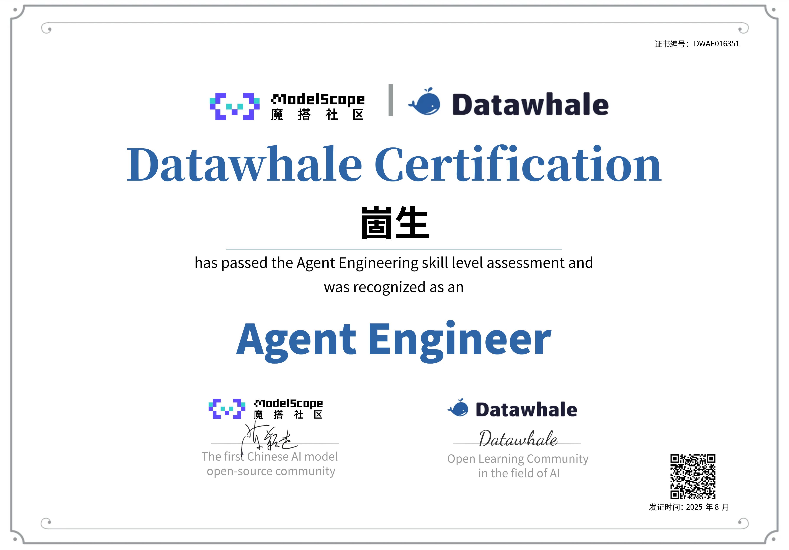
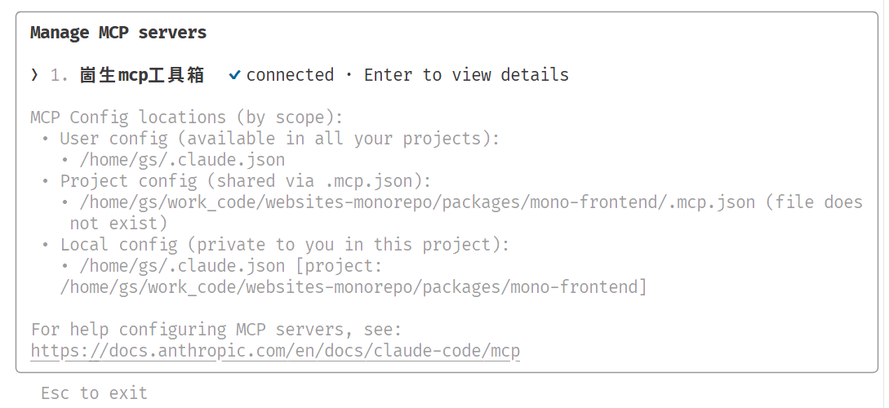
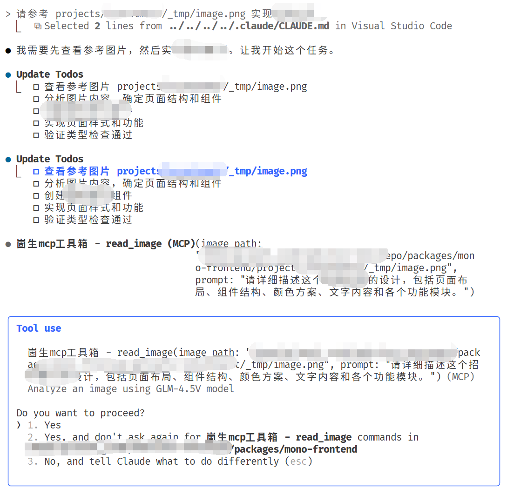

最近更新.rss.xml
关键特性
绿色表示完全可用 黄色表示部分可用 无色 == 大饼
兼容思源绝大部分效果 🎉
一键部署
网页上传到自定义接口（目前支持 s3)
基于 node.js 命令行自动编译、部署
生成chm单体文件，便于类似分发帮助文档这种需求
SEO 友好，可以放心修改文章名称，移动块，不用担心分享的链接无法访问到内容(在笔记中删掉了那我没办法
通过 preload 来实现
基于块id的永久链接
仅支持文档块和标题块，否则体积过大
可读路径的302重写（不完全覆盖文档，在 head 中添加延时跳转，js弹窗提醒该文档已移动，浏览者可以选择不跳转继续阅读。）
上面方法无法定位的情况下通过文档名智能推荐
自动生成 sitemap.xml
更易于复制粘贴分享
许多网站的编辑器都是能够拉取图片的，但有一些的实现是网站后端进行
拉取(避免前端跨域无法拉取)，所以部署到公网的文章可以直接选中片段粘贴图片，而内网的则不行
语义化的html结构
小、快、省
通过对输出html结构优化，能够输出体积更小，解析更快的源文件
可选通过cdn加载公共资源文件更节省服务器流量，更快的js、css加载速度
支持增量编译，编译速度很快
可选的图片优化、压缩、生成预览
配置功能
开放的 json 配置文件，便于自定义编译细节
插件功能
简洁的插件机制，可以轻松扩展想要的其他功能
兼容思源绝大部分效果 🎉
一键部署
网页上传到自定义接口（目前支持 s3)
基于 node.js 命令行自动编译、部署
生成chm单体文件，便于类似分发帮助文档这种需求
SEO 友好，可以放心修改文章名称，移动块，不用担心分享的链接无法访问到内容(在笔记中删掉了那我没办法
通过 preload 来实现
基于块id的永久链接
仅支持文档块和标题块，否则体积过大
可读路径的302重写（不完全覆盖文档，在 head 中添加延时跳转，js弹窗提醒该文档已移动，浏览者可以选择不跳转继续阅读。）
上面方法无法定位的情况下通过文档名智能推荐
自动生成 sitemap.xml
更易于复制粘贴分享
许多网站的编辑器都是能够拉取图片的，但有一些的实现是网站后端进行
拉取(避免前端跨域无法拉取)，所以部署到公网的文章可以直接选中片段粘贴图片，而内网的则不行
语义化的html结构
小、快、省
通过对输出html结构优化，能够输出体积更小，解析更快的源文件
可选通过cdn加载公共资源文件更节省服务器流量，更快的js、css加载速度
支持增量编译，编译速度很快
可选的图片优化、压缩、生成预览
支持站内搜索
对图片支持完美ocr： OceanPress插件实现完美ocr v0.3.6
对图片支持完美ocr： OceanPress插件实现完美ocr v0.3.6
OceanPress更新日志
使用 cli 程序
安装与更新
需要提前准备好 node 运行环境 ： 各种系统安装node
md
pnpm i -g oceanpress
# 查看命令提示,例如：
oceanpress --help
-----
Options:
-c, --config 指定配置文件的位置
-h, --host web服务绑定到的地址 (default: "127.0.0.1")
-p, --port web服务绑定到的端口 (default: "80")
--cache 配置为 true 时开启缓存,默认为 false 不开启缓存 (default: "false")
配置文件可以在在线站点进行可视化配置并导出到本地使用
配置文件可以在在线站点进行可视化配置并导出到本地使用
md
pnpm i -g oceanpress
# 查看命令提示,例如：
oceanpress --help
-----
Options:
-c, --config 指定配置文件的位置
-h, --host web服务绑定到的地址 (default: "127.0.0.1")
-p, --port web服务绑定到的端口 (default: "80")
--cache 配置为 true 时开启缓存,默认为 false 不开启缓存 (default: "false")
distill Web Monitor 去除任务数量限制
能够付费的话还是付费的好，主要我没法付费。
编写此文章时 3.6.12 版本可用。
第一步：修改源码（这一步可以跳过）
先正常登录使得能够打开插件，然后根据下面的方式找到 distill 的 xpi
地址栏输入 about:support 查看支持，在这个页面打开配置文件夹可以查看数据存放地址，扩展所在地址
对于使用id命名的扩展xpi可以在扩展管理界面查看最后更新时间去确定是哪一个，可以直接修改xpi包来调整扩展。
再将 ui/assets/label.d933b3ec.js 中的 checkSieveConstraint的limit变量由原来的25修改为999

第二步：然后在firefox的配置项中，在 extensions.webextensions.restrictedDomains 中添加 ,api.distill.io 禁止扩展访问该域名
或者在系统 host 文件中配置 127.0.0.1 api.distill.io

原理是这个扩展完全可以不依赖它自身的在线服务运行，他会通过服务来判断是否超出来25条然后将超出的移动到回收站。禁止访问该域名就放弃了云同步，他就无法执行上述操作了。
能够付费的话还是付费的好，主要我没法付费。
能够付费的话还是付费的好，主要我没法付费。
第二步：然后在firefox的配置项中，在 extensions.webextensions.restrictedDomains 中添加 ,api.distill.io 禁止扩展访问该域名
或者在系统 host 文件中配置 127.0.0.1 api.distill.io
使用 DeepSeek
使用智谱 GLM-4.5
log
export ANTHROPIC_BASE_URL=https://open.bigmodel.cn/api/anthropic
export ANTHROPIC_AUTH_TOKEN="这里输入你注册的bigmodel API keys"
一些证书

推广
此处推荐 chat gpt key 购买网站 - siliconflow 硅基流动 ， https://console.closeai-asia.com/

我关注的一些优秀的博客： feed
立即联系，开启您的网络之旅
无论您是需要建设全新网站，还是对现有网站进行改版升级，都能为您提供专业、高效、贴心的服务。作为邵东本地人，我们期待与您携手，共同打造属于邵东企业的网络名片。
联系方式<点击查看> ，让我们面对面交流，为您的企业量身定制最适合的网络解决方案！
无论您是需要建设全新网站，还是对现有网站进行改版升级，都能为您提供专业、高效、贴心的服务。作为邵东本地人，我们期待与您携手，共同打造属于邵东企业的网络名片。
联系方式<点击查看> ，让我们面对面交流，为您的企业量身定制最适合的网络解决方案！
本地优势，服务更贴心
您获得的不仅是一个网站，更是一位懂邵东的数字合作伙伴。我们能够面对面沟通，深入了解您的业务模式、目标客户和发展愿景，将邵东特色融入您的网站设计中，让您的网站更具本土亲和力。
您获得的不仅是一个网站，更是一位懂邵东的数字合作伙伴。我们能够面对面沟通，深入了解您的业务模式、目标客户和发展愿景，将邵东特色融入您的网站设计中，让您的网站更具本土亲和力。
作为邵东本土的网站开发专家，我们深知邵东企业与机构在网络时代的独特需求。我们就在邵东，与您同处一方热土，更懂您的业务与客户。
全面服务，满足多元需求
我们提供一站式网站建设解决方案：
企业品牌官网建设，展现企业形象与实力
营销型网站开发，助力产品推广与销售转化
B2C网上商城系统，拓展线上销售渠道
行业门户网站开发，打造行业信息平台
微信小程序与APP开发，覆盖移动端用户
网站推广与网络营销，提升网站曝光度
我们提供一站式网站建设解决方案：
企业品牌官网建设，展现企业形象与实力
营销型网站开发，助力产品推广与销售转化
B2C网上商城系统，拓展线上销售渠道
行业门户网站开发，打造行业信息平台
微信小程序与APP开发，覆盖移动端用户
网站推广与网络营销，提升网站曝光度
企业品牌官网建设，展现企业形象与实力
企业品牌官网建设，展现企业形象与实力
营销型网站开发，助力产品推广与销售转化
营销型网站开发，助力产品推广与销售转化
B2C网上商城系统，拓展线上销售渠道
B2C网上商城系统，拓展线上销售渠道
行业门户网站开发，打造行业信息平台
行业门户网站开发，打造行业信息平台
微信小程序与APP开发，覆盖移动端用户
微信小程序与APP开发，覆盖移动端用户
网站推广与网络营销，提升网站曝光度
网站推广与网络营销，提升网站曝光度
专业团队，品质保障
shenzilong.cn 拥有经验丰富的开发团队，掌握前沿技术，能够为政府机构、企事业单位、中小企业等各类客户提供专业服务。我们不仅注重网站的美观性，更关注用户体验、功能实用性和后期维护便利性。
shenzilong.cn 拥有经验丰富的开发团队，掌握前沿技术，能够为政府机构、企事业单位、中小企业等各类客户提供专业服务。我们不仅注重网站的美观性，更关注用户体验、功能实用性和后期维护便利性。
成功案例，见证实力
我们已为邵东多家企业打造了优质网站，涵盖制造业、服务业、零售业等多个领域。这些网站不仅提升了企业形象，更带来了实际业务增长，成为企业数字化转型的重要一步。
我们已为邵东多家企业打造了优质网站，涵盖制造业、服务业、零售业等多个领域。这些网站不仅提升了企业形象，更带来了实际业务增长，成为企业数字化转型的重要一步。
最近实践
好文推荐 https://vue-bits.dev/ 非常绚酷的 vue 动画库
好文推荐 浏览器插件开发最佳实践 https://wxt.dev/guide/installation.html
好文推荐 前端开发的瓶颈与未来之路
快速使用
我使用 claude code 创建了一个 崮生mcp工具箱 项目，项目地址：https://github.com/2234839/mcpserver
下载项目并执行 pnpm i , pnpm build 并配置环境变量中的 GLM_API_KEY
参考： 如何为 claude code 添加用户级mcp工具 配置 ~/.claude.json
在 ~/.claude/CLAUDE.md 中添加提示词规范
json
## 图片处理规范
禁止使用你的 read 工具进行读取图片，因为你的读取图片工具失效了。所以请使用mcp server 提供的 read_image 工具 读取
重新打开一个 claude code 运行 /mcp 就可以看到了

这时你就可以让 claude code 去愉快的读取本地图片了☆: .｡. o(≧▽≦)o .｡.:☆

重新启动 claude code
运行 /mcp ,发现了对应的server 处于 ✔ connected 状态即可
下载项目并执行 pnpm i , pnpm build 并配置环境变量中的 GLM_API_KEY
这时你就可以让 claude code 去愉快的读取本地图片了☆: .｡. o(≧▽≦)o .｡.:☆
在 ~/.claude/CLAUDE.md 中添加提示词规范
参考： 如何为 claude code 添加用户级mcp工具 配置 ~/.claude.json